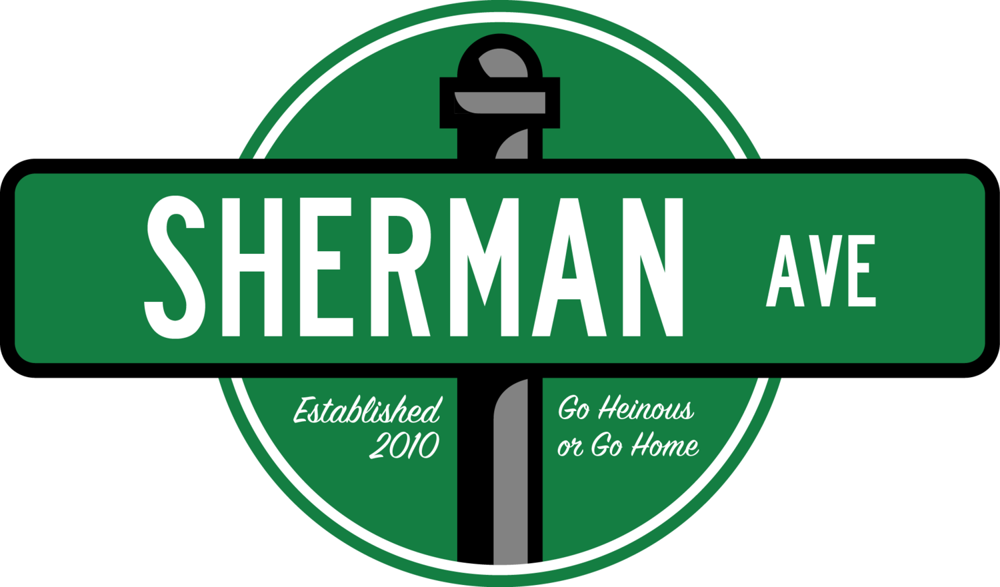

Northwestern Purity Test
The Northwestern Purity Test

The Rice Purity Test has historically served as a segue from O-week to true college life at Rice. Well I for one think it's fair to say that Rice University has fallen off. Where is it? Is it even a top 10 university? And what the fuck is O-week? It's high time someone released a Northwestern purity test, a good way to track your progress from Wildcat Welcome, to inevitable death sometime within the next four years.